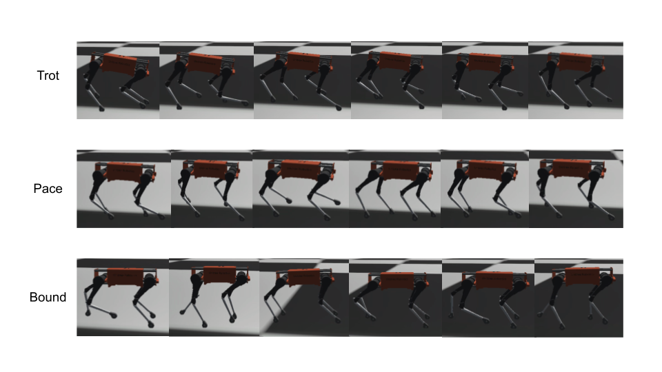

{{ page.title }}
arXiv Preprint 2021
Yunho Kim Bukun Son Dongjun Lee
Seoul National University

|
Abstract
There is a growing interest in learning a velocity command tracking controller of
quadruped robot using reinforcement learning due to its robustness and scalability.
However, a single policy, trained end-to-end, usually shows a single gait regardless
of the command velocity. This could be a suboptimal solution considering the existence
of optimal gait according to the velocity for quadruped animals. In this work, we propose
a hierarchical controller for quadruped robot that could generate multiple gaits
(i.e. pace, trot, bound) while tracking velocity command. Our controller is composed of two policies,
each working as a central pattern generator and local feedback controller, and trained with hierarchical
reinforcement learning. Experiment results show 1) the existence of optimal gait for specific velocity
range 2) the efficiency of our hierarchical controller compared to a controller composed of a single
policy, which usually shows a single gait. Codes are publicly available.
|
Paper: [PDF]
Code: [GitHub]
Preprint: [arXiv]
Slides: [Link]
|
Bibtex
@article{kim2021learning,
title={Learning multiple gaits of quadruped robot using hierarchical reinforcement learning},
author={Kim, Yunho and Son, Bukun and Lee, Dongjun},
journal={arXiv preprint arXiv:2112.04741},
year={2021}
}